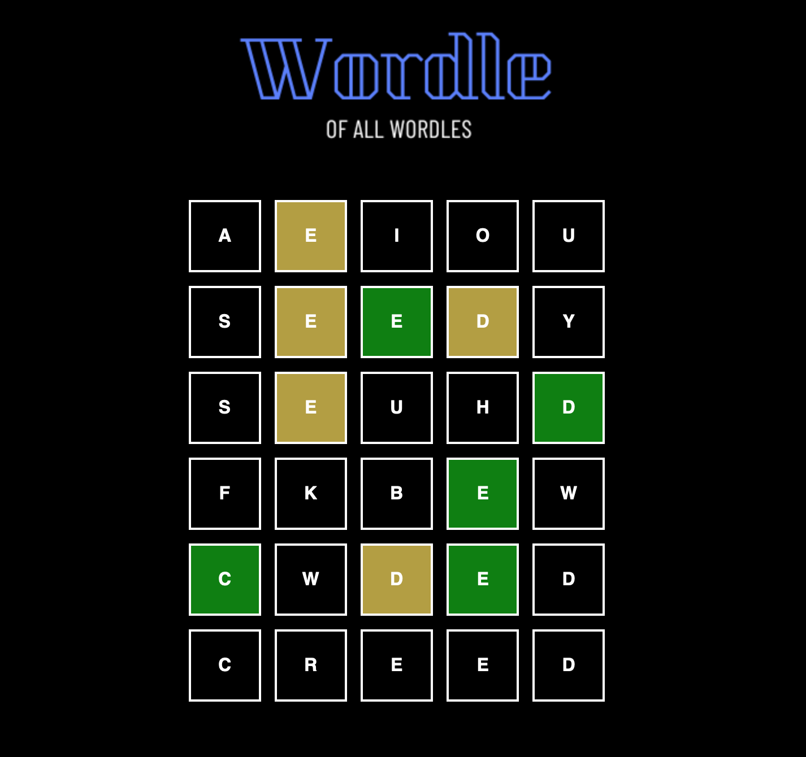
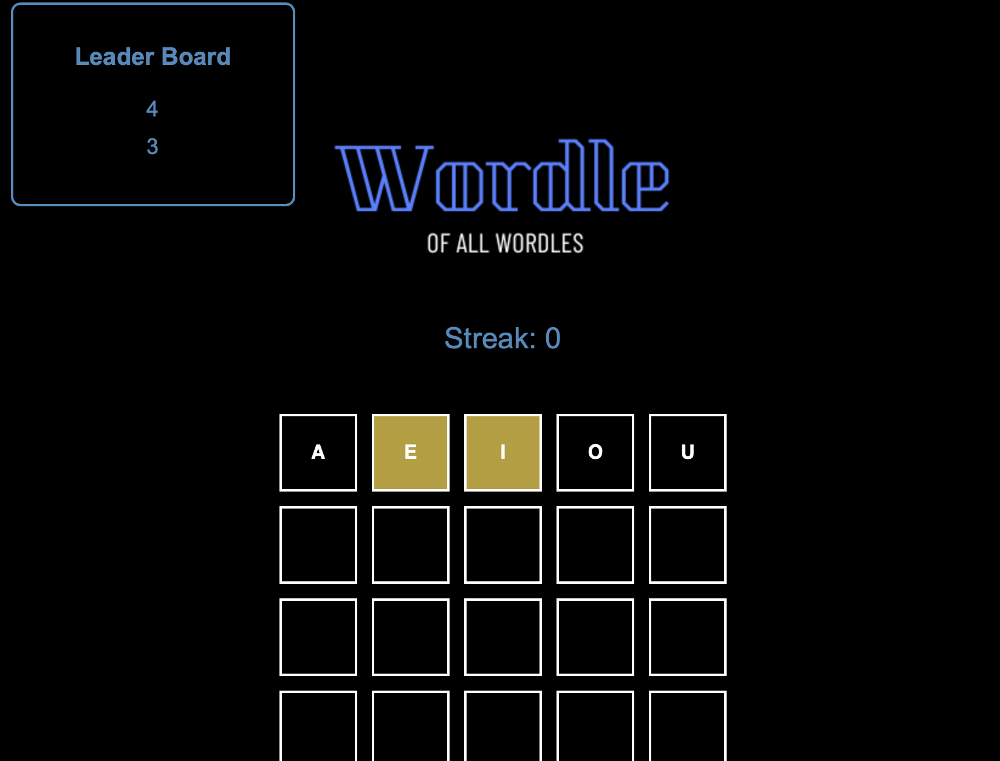

Made a wordle game with a unique set of words facilitating vocabulary skills in the player. The game was designed using HTML to lay out the grid assets and JavaScript to apply game logic and real time action.
Projects
Wordle
Specially designed by both Justin Wang and Mustafa Ahmed for CSI3140!Version 1
Version 2
Added a scoring system to the wordle game accounting for streaks and a live updated leader board. Game logic was re-implemented into PHP server with user interaction being handled by JavaScript and game display handled with HTML/CSS. An SQL data base was used to store words and scores.

Algorithm Visualizer
Project of Justin WangCreated a visualizer for pathfinding algorithms, A* and Dijkstra's, that can visualize pathfinding from one node to another.
Built the program with Python and used the Tkinter GUI library for pop-ups and accepting user inputs for where to place the start and end nodes
Used Pygame library to create UI that allows users to place nodes on a 50x50 grid and draw barriers to change the algorithm's path

Mealer
Project of Mustafa AhmedImplemented a meal prep service moderated by an admin, used by cooks and accessed by clients to request, purchase and rate cook services.